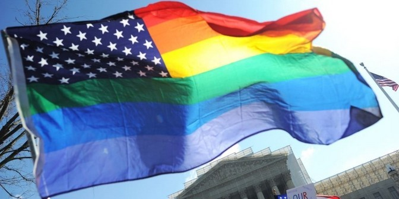
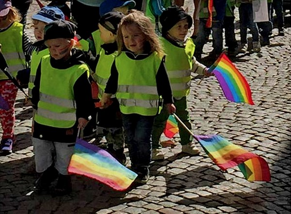

Андрей Борцов (Warrax)
ЛГБТ — авангард либерализма
США, не ограничиваясь «парадами гордости», решили провести «месяц гордости» ЛГБТ-сообщества, в рамках которого Библиотека Конгресса США организовала выставку литературы, описывающей гомосексуальные отношения. Уильям Джонсон, один из организаторов, заявил: «Мы считаем, что ЛГБТ-литература имеет основополагающее значение для сохранения нашей культуры». Мне тут не понятно: ЛГБТ-литература каким-либо загадочным и неизвестным науке образом способствует сохранению традиционной американской культуры или же я чего-то не знаю и эта традиционная американская культура ближе к «Горбатой горе», чем к фильмам с Клинтом Иствудом?
Также Верховный суд США постановил легализовать однополые браки во всех штатах оптом, а глава Госдепа заявил, что США будут теперь нести в другие страны не только демократию.

Обычно тема «почему в России недопустимо распространение гомосексуализма как нормы» поднимается со стороны религиозной морали, и я не раз натыкался на мнение «если ты против религии, то должен быть за ЛГБТ, так как они тоже против религии». Нет уж, извините: если крокодил съел вашего врага, это не значит, что он стал вашим другом. Давайте посмотрим на проблему с разумной точки зрения, оставив религиозные вопросы в стороне (тем более, что в мире уже есть конфессии, в которых геи могут быть даже священниками).
Предполагая, что в комментариях начнутся вбросы вида «медики утверждают, что гомосексуализм — не болезнь!» и «наука доказала, что гомосексуализм — врождённая особенность», сразу скажу, что в контексте темы «нужно ли делать гомосексуализм нормой в России» это не имеет ровно никакого значения. Тем не менее, профилактически придётся ответить и на эти вопросы, чтобы увеличить КПД обсуждения.
Касательно ВОЗ, МКБ, АПА и прочего. Дело было так: в 1963-м году Комитет Нью-Йоркской медицинской академии изучил вопрос гомосексуализма, поскольку таковой начал становиться всё более частным явлением, и принял решение, что гомосексуализм является болезнью (и поэтому недопустимо преследовать гомосексуалистов по закону). Затем заработали окна Овертона, и в 1974-м году Американская Психиатрическая Ассоциация большинством голосов 5854 против 3810 постановила перестать считать гомосексуализм болезнью, но не возвращать уголовные статьи в законодательства, а отныне заявить его нормой сексуального поведения. Это голосование получило название «эпистемологического скандала» — единственный в истории науки случай разрешения научного вопроса путем голосования, а не экспериментальных доказательств.
Обратите внимание: исключили из списка болезней именно и только гомосексуализм, оставив кучу других сексуальных перверсий — т.е. это был не хоть как-то обоснованный пересмотр общих критериев феномена болезни, а именно что «пойдём навстречу именно гомосексуалистам». Кстати говоря, строго конвенциального понимания болезни не существует, обычно исходят от страданий и неудобств для больного. Но есть множество патологий, которые малозаметны и не приносят страданий — скажем, какой-нибудь шестой палец на ноге, но это ведь нельзя назвать нормальным организмом! Президент Независимой психиатрической ассоциации России Ю.С. Савенко пишет: «На протяжении 70-90-х гг. представления о гомосексуализме проделали весь возможный диапазон отношения к себе: преступление — болезнь — патология — норма. Тем не менее, из этого не следует, что “патологическое” ограничивается социокультуральным и не имеет биологического основания, и что человеческое общество может произвольно и беспредельно диктовать природе свои “нормы”. За такого рода произвол общество неизбежно расплачивается, подчас неуследимо и самым неожиданным образом».
В статье Э. Мерсер «Терпимость: единство среди различий. Роль психиатров», написанной как раз с весьма толерантной точки зрения, отмечается: «Результаты международного опроса, проведенного моим отделом среди психиатров об их отношении к гомосексуализму, показали, что подавляющее большинство рассматривает гомосексуализм как девиантное поведение, хотя он был исключен из списка психических расстройств». То есть психиатры как учёные и медики продолжают считать гомосексуализм девиацией, но не заявляют это публично, поскольку очень легко нарваться на осуждение ЛГБТ-активистов и лишиться возможности заниматься научной работой «за дискриминацию». Ровно та же ситуация с темой изучения корреляции расы и интеллекта (вспомним лауреата Нобелевской премии по физиологии и медицине Джеймса Уотсона).
«Международная классификация болезней» вообще выпускается какими-то креативными затейниками: перетаскивание рубрик из одного раздела в другой и игра в «болезнь / норма» уже не вызывает удивления, все привыкли. В конце концов, ВОЗ даже не рассматривает МКБ-10 как теоретическую систему! Это просто классификация для удобства, не имеющая прямой научной основы. Гомосексуализм сейчас вполне вписывается в раздел F65.8 «Другие расстройства сексуального предпочтения».
Общим критерием болезни, особенно психологического плана, также является нарушение социальной адаптации. Однако ЛГБТ-активисты выворачивают смысл наизнанку: это же норма, и если другие нормальные люди почему-то не любят гомо-нормальных, то надо менять менталитет социума. Стандартное либеральное понимание демократии как «прав меньшинств», т.е. чистое политиканство, а не наука. Вот научный взгляд: Г.С. Кочарян, «Нормализация гомосексуализма как медико-социальная проблема»:
«…идея терпимости по отношению к гомосексуалам и принятия гомосексуализма как объективно существующей реальности не должна уступать место идее о гомосексуализме как о норме!
Изменение отношения к гомосексуализму, а именно, стремление к его депатологизации, которое нашло отражение в последних медицинских классификациях, следует рассматривать как процесс, который игнорирует биологический компонент нормы и опирается на определенный социальный заказ, направленный на уравнивание гетеро- и гомосексуальной ориентаций (будто бы являющихся лишь различными нормативными вариантами полового влечения)…»;
«О существующем социальном заказе, в частности, говорит характер некоторых исследований, якобы свидетельствующих о превосходстве гомосексуалов над гетеросексуалами по ряду характеристик. Так, известный российский социолог И.С. Кон … сообщает, что ….уровень образования и дохода геев и лесбиянок нередко выше среднестатистического… цитируемый автор отмечает, что в некоторых видах творческого труда, особенно связанных с искусством, они даже статистически “перепредставлены”». Тоже мне открытие, об этом ещё Хрущёв говорил.
Также есть данные об успешном излечении от гомосексуализма (понятно, что без 100% гарантии). Даже профессор Колумбийского университета Р. Шпицер, который когда-то и принимал то самое решение об исключении гомосексуализма из списка психических расстройств, изменил свою точку зрения, поскольку экспериментально убедился в том, что гомосексуальное влечение лечится — см. Spitzer R.L. Can some gay men and lesbians change their sexual orientation? 200 participants reporting a change from homosexual to heterosexual orientation // Archives of Sexual Behavior. — 2003. — Vol. 32, №5. — P.403–417. В исследовании принимали участие 200 человек, и у 66% мужчин и 44% женщин получилось добиться гетеросексуального «функционирования» (что, кстати, уменьшило депрессии с 41% до 1% у мужчин и с 47% до 4% у женщин). Критики отмечали, что большинство участников были религиозны и хотели избавиться от гомосексуальной ориентации — но это указывает лишь на то, что для излечения требуется сильное желание, что верно и для наркомании, к примеру. С точки зрения психиатрии странно запрещать излечение гомосексуальной ориентации при желании пациента, не так ли? Он как раз испытывает страдания (депрессии) и т.д., а гетеросексуальная ориентация пока ещё норма, так ведь? С чего это ЛГБТ-лобби берётся решать, какая именно норма для индивида лучше?
Из отечественных специалистов процитирую Яна Голонда:
«Видеоматериалы об успешном излечении больных с сексуальными расстройствами (гомосексуалов и транссексуалов) были продемонстрированы во время доклада на 15 конгрессе сексопатологов в Париже. Мне удалось вернуть к нормальной гетеросексуальной жизни семерых транссексуалов и 78 гомосексуалов, а также несколько десятков пациентов с сексуальными перверсиями.
…Если бы психотерапия гомосексуализма не приносила успеха, вряд ли бы такие уважаемые психотерапевты-сексопатологи Август Форель, И.С. Сумбаев, Н.В. Иванов, Милтон Эриксон, В.Мастерс и В. Джонсон, К. Имелинский, Д. Ванкрофт, Т. Биликевич, К. Ален, Д. Биебер, Н. Эллис, К. Фроинд, Р.Климмер, Т. Бастанжиев, Вивьен Касс, Н. Кибрик и др. стали тратить время на сложную долговременную психотерапию».
Как иллюстрация «до чего можно дойти»: наталкивался на тезис от ЛГБТ-активиста: излечение в таком случае означает, что-де это были «не гомосексуалы, а гетеросексуалы с гомосексуальным поведением» (sic!).
По вопросу врождённости: «Среди учёных нет единого мнения о точных причинах формирования гетеросексуальной, бисексуальной или гомосексуальной ориентации. Многочисленные исследования возможного влияния особенностей развития, генетических, гормональных, социальных и культурных факторов на сексуальную ориентацию не позволили учёным сделать однозначный вывод о том, что сексуальная ориентация определяется каким-либо конкретным фактором или группой факторов», однако, что показательно, «Все основные национальные психиатрические организации официально выразили свою озабоченность по поводу методов лечения, которые якобы способствуют изменению сексуальной ориентации».
Все подобные исследования, которые мне попадались, противоречат научной методологии: нельзя делать выводы на основании нерепрезентативных выборок в несколько человек, нельзя вести исследования без контрольной группы и т.д., рекомендую хорошую статью на тему: «"This is the Way God Made Me" — A Scientific Examination of Homosexuality and the "Gay Gene"» (есть сокращённый перевод). Скажем, когда говорили о «близнецовом методе», то однояйцевые близнецы показывали высокий процент «совпадения по гомосексуализму», однако в исследовании не было близнецовых пар, которые воспитывались бы раздельно, а вот обнаруженный Бэйли и Пиллардом факт, что частота гомосексуальности у приемных братьев гомосексуалистов в несколько раз превышает долю гомосексуалистов среди населения, и близка к показателю для биологических братьев, не являющихся близнецами, как раз указывает на важность воспитания. Из того, что большинство «биологических переменных» являются непрерывными по своему характеру, следует, что в случае естественности гомосексуальной ориентации в обществе должна быть широко представлена шкала от строго гетеро- до строго гомо- с множеством промежуточных состояний (как с ростом, весом, интеллектом, темпераментом и проч.) — но такого не наблюдется. Вот, нашёл специально цитату с гей-сайта для наглядности: «Авторы нового исследования, проведенного группой психологов в Чикаго и Торонто, сомневаются в том, что бисексуальность существует, по крайней мере, мужская. Эти критики утверждают, что люди, называющие себя бисексуалами, обычно гомосексуальны, но они неоднозначно относятся к своей гомосексуальности или просто не желают в ней признаваться. "Либо ты голубой, либо обычный, либо лжец"».
С научной точки зрения, если некий биологический феномен является врождённым, то должны обнаруживаться органические и/или биохимические изменения, но ничего подобного не обнаружено. И, кстати, касательно любителей ссылаться на животных: гомосексуального влечения у животных не может быть от слова «совсем»: у них отсутствует вторая сигнальная система, подобный «аргумент» — это полное непонимание научной методологии. Сексуальная разрядка и иерархические подтверждения статуса сексуальным влечением не являются.
Зато давайте посмотрим на данные (благодарю Алексея Кокорина за наглядные ссылки). Вот опрос 3900 канадских старшеклассников в возрасте 17,4 года: 71% имеет гетеросексуальную ориентацию, 3% — трансгендерную, а 26% — это лесбиянки, геи, бисексуалы, неизвестные мне «allosexuelles» (Facebook вообще полсотни видов половой принадлежности изобрёл) или же «не определились». Странные 3%: «Частота транссексуализма составляет примерно 1:100-200 тыс. человек. В основе его лежат грубые нарушения формирования структур мозга, ответственных за половое поведение индивида, что ведёт к искажению полового самосознания и ощущению принадлежности к другому полу» — и, между прочим, во Франции в 2010-м году исключили транссексуализм из списка заболеваний; при этом неопределившиеся показательно занесены к геям и т.п. — мол, раз задумался над вопросом, то всё, путь в гетеро- уже закрыт! Это — опрос 2011 года, а по данным опроса 135000 канадцев в 2003-м году выявили, что 1,0% респондентов самоидентифицировались как гомосексуалы и 0,7% самоидентифицировались как бисексуалы. Как-то резко возросло, не так ли? А вот суммарная доля гомо- и бисексуалистов, а также транссексуалов в Канаде по возрастным группам (2012 г.): 65+ лет — 2,6%, 55-64 лет — 2,6%, 45-54 — 3.3%, 35-44 — 3,4%, и 18-34 — 11.1%. Если бы гомосексуализм был врождённым, то статистика по годам не должна заметно отличаться, но тут получаем, что среди молодых — гомосексуалистов в 3-4 раза больше! Т.е. если даже счесть, что есть некий «гомо-ген» приблизительно у 3% населения, то остальные-то — именно «от влияния других». Обратите также внимание: шкала идёт через 10 лет, но промежуток 18-34 непропорционально велик. Видимо, если бы оставить шкалу как 25-34 и 18-24, то было бы ещё нагляднее. Так что лозунги вида «процент гомосексуалистов стабилен его нельзя изменить» выглядит странненько. Может, всё же «несуществующая» пропаганда гомосексуализма работает? Особенно, когда представления «как о норме» начинают внушать с такого вот возраста (это в Швеции детей из детсада заставили принять участие в гей-параде):

Вопрос правовой дискриминации даже затрагивать не хочу, вот вам подробнейший доклад на тему от трёх докторов юридических наук: Понкин И.В., Кузнецов М.Н., Михалева Н.А. «О праве на критическую оценку гомосексуализма и о законных ограничениях навязывания гомосексуализма»:
«Вызывает серьезную озабоченность, что некоторые представители международных институтов и общественных организаций занимают одностороннюю позицию, основанную на положительной оценке гомосексуализма и абсолютизации прав и интересов гомосексуалистов. Именно на основе этой категоричной позиции уже принят ряд международных и национальных правовых документов, в которых провозглашается (декларируется) безусловно одобрительное отношение к гомосексуализму и навязываются рекомендации формировать и пропагандировать такое отношение в системе образования и СМИ. Одновременно признаются безусловно неправильными и недопустимыми, категорически отвергаются любые критические взгляды на эту проблему и попытки критического анализа гомосексуализма как социальной аномалии. Право большинства свободно выражать свое мнение по этой проблеме апологетами гомосексуальности с негодованием отвергается…
…гомосексуализм, помимо того, что является специфической личностной и социально-групповой комплексной морально-психологической и культурной идентичностью, существенно отличающимся от свойственного большинству населения образом жизни и особой психологией мышления и поведения и системой взглядов, к настоящему времени фактически стал идеологией, активно пропагандируемой ее приверженцами, при этом, не терпящей критики, имеющей агрессивный прозелитический характер и претендующей на ее всеобщее признание, универсальность, государственную и международную поддержку».
Нет никакой дискриминации! Даже нет запрета на преподавание в школах и воспитание в детских садах — лишь запрещается пропаганда «как нормы». Более того, ни в правоохранительной системе, ни в медицине в целом (т.е. кроме сексопатологов и т.п.), ни на госслужбе, вообще нигде не ведётся учёт половой ориентации — таким образом, юридически она никак не может дискриминироваться в принципе!
Гомосексуалисты в РФ могут даже сдавать кровь (не говоря уж о том, что никто не заставляет выставлять ориентацию напоказ). Почему «даже»? Да потому, что во множестве «цивилизованных» стран, включая США, донорство для гомосексуалистов запрещено.
При этом потакание ЛГБТ доходит до маразма: так, Sony Music в 2006-м году «объявила о запуске первого крупного рекорд-лейбла, который будет заниматься продвижением артистов гомосексуальной и бисексуальной ориентации» — какое отношение сексуальная ориентация имеет к качеству музыки? Фредди Меркьюри и Роба Хэлфорда мы любим не за это! А в 2010-м году Google решил повысить зарплаты сотрудникам гомосексуальной ориентации — это, значит, не дискриминация гетеросексуальных?
Итак, мы выяснили, что:
- психиатры вводили гомосексуализм в список болезней и выводили из такового именно лоббирую интересы гомосексуалистов, при этом сам список МКБ не имеет научного характера;
- не существует никаких доказательств врождённости гомосексуализма;
- в последнее время (когда ведётся гей-пропаганда) количество гомосексуалистов возросло, что указывает на высокую вероятность влияния средового фактора, при этом то, что «гомосексуализм — норма», внушают с самого раннего детства;
- юридическая дискриминация гомосексуалистов в РФ отсутствует.
Негативное же отношение общества к секс-меньшинствам — это отношения вне правового поля, менталитет населения. Даже если издать закон «всем поголовно начать любить гомосексуалистов!» — толку не будет, менталитет народа невозможно изменить в столь бессознательном вопросе «по команде». Нормальный русский человек «про это» разве что анекдот рассказать может, а если придётся говорить всерьёз о том, чем так гордятся на гей-парадах, то возникает естественное смущение от неприличности темы как таковой:
Давайте наконец посмотрим на понятие нормы, которой всё время заявляется гомосексуализм. Термин имеет не одно значение, поэтому происходит хитрая подтасовка.
Во-первых, нормой называют «среднее». Скажем, «в норме человек болеет гриппом столько-то раз за жизнь».
Во-вторых, нормой называют «как должно быть»: «человек должен быть здоров и вообще не болеть».
В социальных вопросах необходимо учитывать первый вариант понимания для анализа ситуации, но стремиться ко второму. В норме такой-то процент больных — но в идеале все должны быть здоровы; процент преступников по региону в пределах нормы — но хорошо бы, чтобы преступников не было вообще, и т.д.
Таким образом, если наличие гомосексуалистов полезно — то их должно быть как можно больше; для честности укажу вариант «в норме должен быть приблизительно такой-то процент» — но в обоих подвариантах должна быть указана явная и конкретная польза для социума, народа и государства. Не либеральное «это их право» и проч.: если от них есть польза, то требуется указать в явном виде.
Если наличие гомосексуалистов вредно — то их должно быть как можно меньше, а в идеале количество требуется помножить на ноль.
Третий вариант: с социальной точки зрения наличие гомосексуалистов безразлично социуму, и вообще не надо обращать внимание на их количество.
Итак, что мы имеем в России? Пользу от наличия гомосексуалистов для социума никто не показал вообще нигде. Что касается вреда, то тут необходимо различать ориентацию сексуальную и политическую, если можно так выразиться: пока гомосексуалист реализует свои пристрастия в частном порядке, честно не относя их к норме, то непосредственно вреда он не приносит, как и пользы, и тему вполне можно отнести к частным вопросам. А вот ЛГБТ-активисты (которые сексуально могут быть и гетеро-) приносят вред. Это понимают и многие геи, которые не хотят пристального внимания к своим проблемам, так что существуют даже геи-«гомофобы», которые против гей-парадов и вообще внимания к вопросам сексуальной ориентации.
Какой вред?
В русском менталитете негативное отношение к гомосексуализму было всегда. Конечно, гомосексуалисты в каком-то количестве были, но нормой это не считалось ни в языческой Руси, ни в православной Русской Империи, ни в атеистическом СССР, ни в современной, с конституционным запретом на официальную идеологию, Российской Федерации. Вот нет у народа в целом принятия как нормы, и всё тут. Причём, обращаю внимание, речь идёт не о безразличии к вопросу, а именно о резком неприятии.
Важно: причины в данном случает не имеют ровно никакого значения. Это может быть интересным вопросом для исследователей — мол, странные эти русские дикари, всё не как у цивилизованных людей: с языческих времён рабства не было, гомосексуализма не было… Но с социальной точки зрения важен сам факт как феномен действительности: подавляющее большинство населения России, причём даже слабо зависимо от национальности, религии или отсутствия таковой, материального положения и статуса в обществе, считают установление гомосексуализма как нормы неприемлемым. Ну, разве что творческая интеллигенция будет исключением по причине страшной далёкости от народа, но и то лишь частично.
Вводить в социум как норму, позволять свободно распространяться и т.д., нечто, что вызывает негативную реакцию у подавляющего большинства — означает нагнетать социальную напряжённость. Вот неприятно видеть что-либо — и если народ это видит, то будет требовать развидеть. Если же правительство будет настаивать на «смотрите, это же норма!», то отношение к правительству будет «в норме такого правительства быть не должно».
Конечно, нельзя утверждать, что ни в коем случае нельзя менять менталитет народа — вдруг что полезное привьешь? Однако необходимо учитывать, что менталитет, мировосприятие — это система, и нельзя просто так убрать, добавить или заменить один элемент. Либо не получится, либо система сломается — и необходимо будет срочно строить новую. Революция 1917-го — наглядный пример, с гражданской войной и военным коммунизмом в комплекте. Или развал СССР и установление капитализма в 1990-е (при этом ломали старое, но не удалось полностью, как и внушить нормальность либерализма — большинство всё ещё против).
Чтобы осознанно идти на переделку менталитета нации, необходима однозначная большая польза от перемен, при этом с пониманием, что изменения будут далеко не одного элемента. Но какая польза от наличия гомосексуалистов доя России? Ровно никакой, так что менять менталитет всего народа ради пожеланий либералов всех стран — мягко говоря, не целесообразно, поскольку польза должна превосходить невротизацию подавляющего большинства нации и резко упавшее доверие правительству, причём всё это — с учётом возрастания числа гомо- и других -сексуалистов, а также их активности напоказ, т.е. роста раздражающего фактора как качественно, так и количественного.
Понятие социальной нормы зависит от культуры, поэтому примеры других стран приводить не надо, это демагогия. Этнографы и сексопатологи такое рассказать могут, вы не поверите; всё прикажете считать нормой? Впрочем, приходилось считать, что и копрофилия — это нормально, если не публично (дискриминация какая-то: почему это геям публично можно показывать свои пристрастия, а копрофилам нельзя?).
Но социальная проблема ещё глобальнее. ЛГБТ — это лишь авангард либерального размывания понятия нормы как таковой. Гендерная идентичность — пожалуй, самая базовая, поскольку бессознательна в наибольшей степени, даже больше, чем национальная принадлежность. И её размытие — это разрушение «фундамента» психики.
Либерализм стремится постмодернистки «размыть» естественные идентичности, сделать «необязательными» и «неопределёнными» понятиями патриотизм и национальную принадлежность, культуру исказить до «современного искусства», деградацию объявить «креативностью», преступление — болезнью (наркоманы), а болезнь — вариантом нормы («Болезнь — это просто иной способ существования» — Ж. Лакан), свалить вину с преступника на жертву («она сама виновата, что её изнасиловали!») и т.д. Норма «как должно быть» в либеральной парадигме — это атомарное общество без каких-либо объединяющих индивидов целей, кроме потребительских («Клуб любителей чего-то»). Любое объединение ради чего-то высшего, чем потребление — снижает уровень этого самого потребления: даже семья из двух человек уже купит меньше товаров, чем двое одиночек, а патриот прекрасно понимает, что ракеты важнее 100500 сортов колбасы (даже если бы они все были из мяса).
Таким образом, позволение гомосексуализма как нормы — это не изолированное явление, оно косвенно, но однозначно способствует разрушению всех традиционных норм. При этом пропаганда гомосексуализма как нормы с раннего возраста приводит к возрастанию интереса к сексу в том возрасте, когда это ещё рано, поскольку ориентация ещё только формируется, и массовые искажения в этой области неизбежны, причём процесс будет убыстряться «в резонанс». Любое «дополнение» вида «а это тоже норма» будет проходить куда легче, один раз психика уже «ломалась»; а потом исчезнет и само понятие нормы.
Так что недопущение гомосексуализма как нормы — это вопрос не столько частных гомосексуальных проблем, сколько сохранение русского менталитета как такового. Если русские станут считать гомосексуализм нормой — это будут уже не русские, а так — русскоговорящие либеральные европейцы, забывшие своих предков.
На всякий случай напишу в явном виде: всё написанное не означает, что геев надо преследовать в уголовном порядке и т.п. Они — такие же люди, как остальные, пока ведут себя в социуме в пределах нормы. Но если некто решит вставить куда-нибудь пучок перьев и гордо пройтись парадом или же начнёт объяснять детям, что такое норма с точки зрения гея, то это — совсем другая история. Причём — независимо от сексуальной ориентации, никакой дискриминации.
Дискриминации вообще быть не должно. Эту тему хорошо раскрыл А. Кравецикий в статье «Чума двадцать первого века. Об одном притесняемом меньшинстве»:
Во внешнем мире, озабоченном борьбой за права меньшинств, я обнаружил ещё одно меньшинство, права которого цинично попираются. Это — гомофобы.
Вот смотрите. Сами гомосексуалисты говорят, что нельзя унижать человека за его отношение к вопросам секса. Однако гомофобия — это ровно оно самое, отношение к вопросам секса. Гомосексуалистам обычно не нравится вступать в гетеросексуальную связь и нравится в гомосексуальную. Гомофобам не нравится вступать в гомосексуальную связь, но нравится в гетеросексуальную. Налицо полная симметрия.
Да, сексуальные воззрения гомофобов столь сильны, что им не нравится даже наблюдать гомосексуальную связь — такие уж у них предпочтения. Можно ли их за это осуждать? Конечно, нет! Ведь сами гомосексуалисты говорят, что когда человека осуждают за сексуальные предпочтения — это очень плохо.
Это странно, однако сами гомосексуалисты, не стесняясь в выражениях, осуждают гомофобов, оскорбляют их, а иногда даже требуют расправы. Налицо чудовищное попирание всех прав. И ладно бы попирающие сами не объявляли во всеуслышание, что никого попирать нельзя, но ведь объявляют же!
Более того, по заявлениям гомосексуалистов, гомосексуалисты — точно такие же люди, как все остальные. Совершенно обычные и ничем не выделяющиеся. Поскольку же гомофобов они из «совершенно обычных» как-то выделяют, то мы имеем классическую ситуацию, когда большинство попирает права меньшинства. Меньшинства — поскольку сами же гомосексуалисты говорят, что норма (то есть большинство) совершенно нормально относится к гомосексуализму, а гомосексуалисты, как мы помним, ничем не отличаются от большинства.Иными словами, большинство, «совершенно обычные люди», набрасывается на немногочисленную, по их же собственным словам, группу гомофобов с проклятиями и угрозами.
Ещё более того. Если верить гомосексуалистам, гомосексуализм не является болезнью, а является нормой. При этом, с их слов, гомофобия — это болезнь (на что нам также намекает само название, оканчивающееся на «фобия»). Таким образом, совершенно нормальные и совершенно здоровые люди унижают, оскорбляют и уничижают меньшинство, состоящее к тому же из нездоровых. Мы помним, гомосексуалист не сам сделал этот выбор, это произошло против его воли — так они говорят. Однако больной ведь был ещё менее свободен в своём выборе.
То есть совершенно нормальное, здоровое большинство попирает ногами больное меньшинство, которое стало таковым под влиянием неподконтрольных им самим сил. Надеюсь, вы уже понимаете, насколько тут всё серьёзно? По их же собственным критериям выходит, что гомофобы — одно из наиболее сильно притесняемых меньшинств. Гомосексуалисты даже предлагают принудительно лечить гомофобию, хотя аналогичные предложения по поводу гомосексуализма считали космического масштаба притеснением.
По причине содержащейся в них гомофобии сейчас запрещают книги. Из образовательной программы выкидывается всё, что хоть сколько-либо намекает на гомофобию. По подозрению в гомофобии людей увольняют или не берут на работу. Мир, как легко видеть, снова впал в величайший грех — нетолерантность.
Мы помним заветы борцов за права гомосексуалистов: в столь тяжёлый час меньшинство — гомофобы — должно сплотиться и единым фронтом встать на защиту своих прав.
В первую очередь следует потребовать, чтобы гомофобия была признана нормой. Должен быть введён в обращение термин «гомофобофобия». Гомофобофобов следует прижать к ногтю, чтобы они и пикнуть не смели по поводу отношения к чужим сексуальным пристрастиям. В первую очередь, конечно, в эту группу попадут гомосексуал-активисты, но, что делать, в большинстве не без урода.
Гомофобам как угнетённому меньшинству нужен свой гимн и свой флаг. Гимн ещё предстоит написать, но флаг я уже придумал. Он максимально непохож на гомофобофобский радужный — чёрный фон, тазовая кость и под ней две скрещенные бедренные. С этим флагом единый фронт по борьбе с гомофобофобией будет выходить на гомофоб-прайды и прочие мероприятия по борьбе за свои права.
Следует потребовать, чтобы процент фильмов про положительных гомофобов был не ниже установленной планки. Чтобы среди главных героев каждого крупнобюджетного фильма были не только негр, женщина, еврей и гомосексуалист, но и как минимум один гомофоб — это справедливо.
Отказ в предоставлении рабочего места гомофобу должен классифицироваться как вопиющее проявление гомофобофобии. Наказание за такое должно быть серьёзным, вплоть до уголовного. Особо упорствующих следует отправлять в специальные лагеря по борьбе с гомофобофобией.
В школьную программу необходимо включить курс по введению в гомофобию, на котором разъяснять детям, что это — неотъемлемая часть культуры, что многие известные люди были гомофобами, что быть гомофобом — нормально. Возможны, думаю, даже практические занятия: ведь детям надо предоставить возможность опробовать гомофобию, прежде чем они сделают свой выбор. Также следует показывать просветительские фильмы про детей, у которых мама и папа — гомофобы, но всё равно это счастливая семья, где все друг друга очень любят.
В перспективе также следует рассмотреть возможность принудительного лечения гомофобофобии. И гомосексуализма — как явления, часто вызывающего гомофобофобию.
При помощи всего этого, я уверен, человечество справится с этой чумой двадцать первого века и толерантность наконец-то восторжествует.
Ну и в заключение — цитата из упоминавшегося выше доклада юристов:
«Российская Федерация обладает суверенным правом самостоятельно и независимо определять в своем законодательстве меры, способы и пределы защиты общественной нравственности, основываясь на собственном, самостоятельно сформированном понимании значения и содержания нравственных ценностей, связанных с национальной культурой, подлежащих охране, защите и поддержке со стороны государства».
P.S. В Канаде возникла свежая идея о норме: «transable» people. Есть психическое заболевание, когда человек чувствует себя инвалидом, хотя физически здоров. Т.е. для него «естественно» быть без ноги или руки, хотя они все на месте. Статья в Канадском National Post объясняет: да, надо помочь человеку при помощи ампутации, привести его организм в соответствие с тем, кем он себя считает.
Специально для PolitRussia.com
июнь 2015
Дополнения
1. Надо добавить про специфическое отношение ювенальной юстиции — кто-либо слышал про изъятие детей из гомосемей? При этом в некоторых странах ЮЮ резвится во всю, отбирая детей у родителей и передавая их в приёмные семьи (включая гомо-). Одновременно по сути запрещается нормально воспитывать в детях гендерную идентичность, на чём-либо строго настаивать и проч., и проч. Т.е. детей воспитывают в неопределённости и вседозволенности, лишают естественной опоры на родителей, в результате получается, если своими словами, невротик-эгоцентрист, но никак не полноценный член общества с адекватной психикой, включая гендерную идентичность. Через поколение — что будет?
2. К вопросу «окон Кара-Мергена»: «…чтобы легитимизировать гомосексуализм, требуется серьезная работа не только в окне Овертона, но и в окне Кара-Мергена — то есть, требуется делегитимизировать, сделать социально неприемлемым такое явление, как традиционный секс, традиционную семью».
М. Гессен, «Институт семьи должен перестать существовать»:
Чтобы они нам не говорили, их конечная цель — разрушение семьи. Чтобы успокоить естественный инстинкт самосохранения народа и каждого отдельного человека, самые разрушительные идеи заворачиваются в весьма симпатичные обёртки. Ювенальная юстиция преподносится как забота общества о детях. Разрешение на однополые браки как стремление ко всеобщему равенству и отсутствию препятствий для «любящих сердец». Но на самом деле конечная цель всех этих «толерантных нововведений», идущих с Запада, — разрушение института семьи как такового. Об этом совершенно откровенно рассказала гомоактивистка, а по совместительству совестливая журналистка, директор русской службы «Радио Свобода» Маша Гессен. А блоггер vene_spb написал прекрасный материал о конечной цели подобных общечеловеков.
«Еще раз убедился, что оторванность русскоязычного сегмента сети от англоязычного интернета ощущается порой особенно остро. Оказывается, на огромном количестве западных сайтов давно тиражируется крайне любопытное высказывание достаточно известной российско-американской журналистки Маши Гессен. Будучи открытой ЛГБТ-активисткой, она принимает участие в разных «тематических» мероприятиях. Честно говоря, меня особо не интересуют проблемы этой маргинальной группы населения. Для меня, «гомоскептика», представляется бессмысленным вступать с ними в полемику — это означало бы признать действительную значимость их проблем для общества в целом. Однако в прошлом году, выступая в эфире крупной австралийской радиостанции, Гессен сделала весьма интересное, если не сказать сенсационное признание, которое обойти вниманием было бы неверно.
Оказавшись, по-видимому, среди дружественно настроенной аудитории (её речь, как слышно начиная примерно с 6:30 на аудиозаписи, выложенной на сайте радиостанции, неоднократно прерывается бурными аплодисментами), Гессен не удержалась и поделилась сокровенным. По словам журналистки, целью движения за права геев является не столько юридическое полноправие гомосексуальных пар с гетеросексульными, сколько ликвидация института семьи как такового.
Выкладываю здесь перевод выступления Гессен.
«Ежику понятно, что гомосексуалисты имеют право на создание брачных союзов, однако я также считаю не менее очевидным и то, что институт брака вообще не должен существовать… Борьбу за право геев вступать в супружеские отношения обычно сопровождает ложь о наших планах относительно института брака как такового уже после того, как мы достигнем цели. Дело в том, что мы лжём, заявляя, что институт брака останется неизменным. Ведь это враньё.
Институт брака ожидают перемены, и он должен измениться. И, повторюсь еще раз, он должен перестать существовать.
Я не собираюсь распространять домыслы о своей жизни. Это не то, что я намеревалась делать, когда начала заниматься общественной деятельностью 30 лет назад.
У меня трое детей, у которых было, более или менее (sic!), пять родителей, и я не понимаю, почему у них не может быть пять родителей юридически… Я вступила в брак в Массачусетсе со своей теперь уже бывшей партнершей (она была из России). К тому времени у нас уже было двое детей – один приемный, другого родила я. Через несколько лет мы расстались, и я познакомилась со своей новой партнершей, у которой уже был ребенок. Биологическим отцом этого ребенка является мой брат, а биологический отец моей дочери — это мужчина, живущий в России, и мой приемный сын также считает его своим отцом. В общем, пятеро родителей оказываются разбиты на две или три группы…
В самом деле, я хотела бы жить в условиях правовой системы, которая была бы способна отражать данную реальность. А она, полагаю, несовместима с институтом брака».
Очень интересно, что за всем этим стоит. «Попоболь» отдельной радикальной лесби-активистки? Или же она всего лишь открыто озвучила часть программы «культурного марксизма» по тотальному демонтажу традиционных социальных институтов и воплощению ультралибертарианской картины мира из романа Олдоса Хаксли «О дивный новый мир», где дети рождаются в инкубаторах?».
3. ЛГБТ как передовой отряд финансово-бюрократического Интернационала.
Вы думаете, что на разрешении однополых браков всё закончится?
Как бы не так!
Это только начало!
Конечная цель планов финансово-бюрократического Интернационала — уничтожение института семьи в привычном для нас сегодняшних виде.
Зачем это делается? Тут две цели, первая из которых дополняет вторую.
1. Уничтожение института семьи как мешающего бюрократии установить тотальный контроль за обществом.
2. Установление тотального контроля за обществом через его атомизацию и для целей сохранения своей неограниченной власти, а так же для полного контроля над рождаемостью и воспитанием детей.
Иными словами, финансово-бюрократический Интернационал стремится к фактическому обобществлению детей и к тотальному контролю за воспитанием детей.